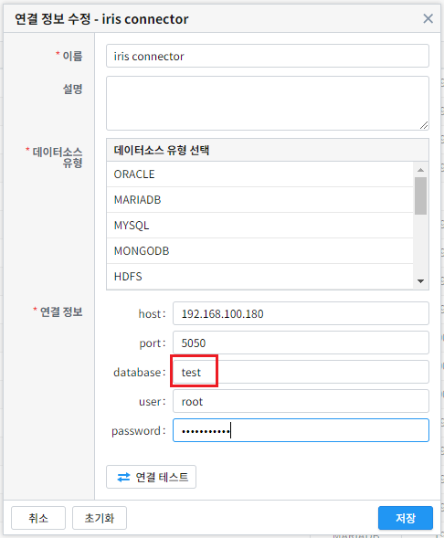
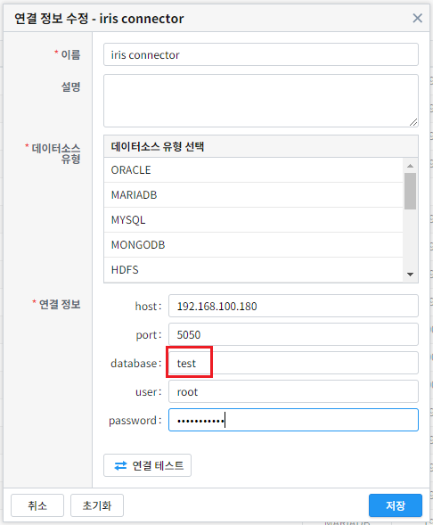

연결 정보¶
개요¶
IRIS UI 에서 DSMS 를 사용하는 내용을 기술 한 문서
연결정보 리스트 보기¶
IRIS UI 메뉴에서 [데이터 브라우저 -> 관리 -> 연결 정보] 를 클릭합니다.
연결정보 화면에 들어가면 연결 정보 목록을 확인 할 수 있습니다.
새로운 연결정보 추가¶
《+ 새 연결 정보》 추가 버튼 클릭
연결정보 입력 창 팝업
데이터 소스 유형 선택 및 연결 정보 입력¶
《데이터소스 유형 선택》 탭에서 원하는 데이터소스 선택
해당 데이터소스에 접속하기 위한 기본 정보 입력
 

연결정보 삭제하기¶
삭제 버튼을 눌러 연결 정보 삭제